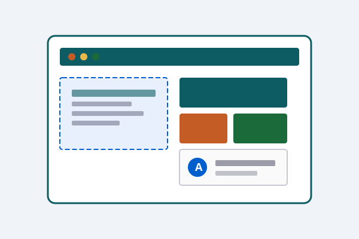
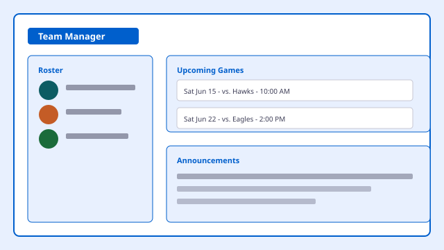

Designing Accessible and User-Centered Digital Experiences
UX Designer, Accessibility Specialist, and HCI Graduate Student
Hello, I'm Kim Jacoby, a Principal User Experience Designer and accessibility specialist currently pursuing a Master's degree in Human-Computer Interaction at Iowa State University. I design inclusive digital experiences that are usable by everyone.

Featured Projects
-

Accessible Parks Search for Iowa
A searchable directory of Iowa state parks with detailed accessibility information for visitors with mobility, vision, and hearing needs.
Read Case Study: Accessible Parks Search for Iowa -

AI Recipe Search
An ingredient-based recipe finder powered by AI, designed with clear feedback, keyboard support, and screen reader compatibility.
Read Case Study: AI Recipe Search -

Youth Sports Team Manager
A team management tool for volunteer coaches and parents, built for quick communication and easy scheduling on any device.
Read Case Study: Youth Sports Team Manager
Accessibility Commitment
This portfolio was designed and developed to meet WCAG 2.2 AA standards and demonstrates accessibility best practices including semantic HTML, keyboard accessibility, responsive design, and accessible navigation.